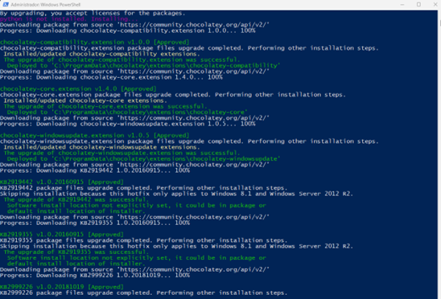
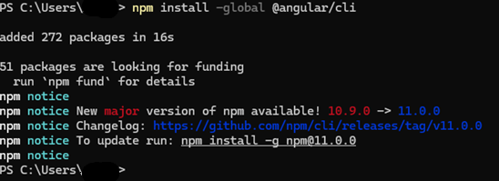
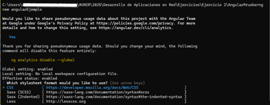
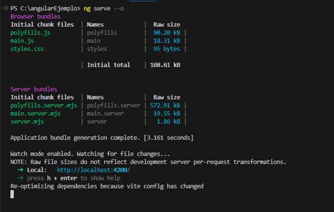
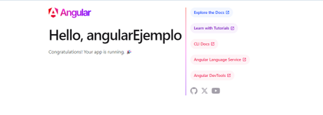

Tutorial Avanzado de Framework Angular
1. Justificación del Framework Angular
1.1 Definición y Origen
Angular es un framework de desarrollo web de código abierto basado en TypeScript, diseñado para crear aplicaciones web dinámicas de una sola página (SPA). Desarrollado y mantenido por Google, Angular proporciona herramientas y bibliotecas para crear interfaces de usuario declarativas, gestionar el estado de las aplicaciones y manejar la comunicación con servidores. Utiliza componentes y directivas para estructurar el desarrollo, además de inyectar dependencias para una gestión eficiente del código. Angular se centra en la modularidad, el rendimiento y la escalabilidad, permitiendo proyectos robustos y mantenibles.
Angular fue lanzado inicialmente en 2010 como AngularJS, creado por Misko Hevery en Google. En 2016, fue completamente reescrito y relanzado como Angular 2, adoptando TypeScript y un enfoque más moderno y modular. Desde entonces, ha evolucionado a través de versiones regulares para mantenerse relevante en el desarrollo web.
1.2 ¿Para qué sirve?
Objetivos Principales
- Desarrollo de aplicaciones web empresariales complejas
- Creación de interfaces de usuario dinámicas e interactivas
- Construcción de aplicaciones de una sola página (SPA)
- Desarrollo multiplataforma
Características Distintivas
- Arquitectura basada en componentes
- Sistema robusto de inyección de dependencias
- Binding de datos bidireccional
- Renderizado eficiente
- Soporte para programación reactiva
1.3 Aplicaciones y Casos de Uso
Sectores de Aplicación
- Desarrollos empresariales
- Aplicaciones financieras
- Plataformas de gestión
- Dashboards interactivos
- Aplicaciones de e-commerce
- Herramientas de colaboración
Ejemplos Reales
- Google Ads
- Microsoft Office Online
- Samsung Members
- Deutsche Bank
- Paypal
1.4 Lenguajes y Tecnologías de Soporte
Lenguaje Principal
- TypeScript: Superset de JavaScript con tipado estático
- Compilación a JavaScript estándar
- Soporte de características ECMAScript modernas
Tecnologías Complementarias
- RxJS para programación reactiva
- Node.js para entorno de desarrollo
- WebPack para empaquetado
- Karma y Jasmine para testing
1.5 Prerrequisitos
Conocimientos Técnicos
- HTML5 avanzado
- CSS3
- JavaScript (ES6+)
- Conceptos de POO
- Fundamentos de TypeScript
Herramientas Recomendadas
- Visual Studio Code
- WebStorm
- Node.js LTS
- npm (Node Package Manager)
- Git
2. Instalación y Configuración
2.1 Preparación del Entorno
Descargamos desde https://nodejs.org/en
Tras la instalación descargará los componentes necesarios para continuar

node --version
npm --version
Instalar Angular desde CLI con el siguiente comando. Es posible que haya nuevas versiones y te sugiera actualizar a una más reciente:
npm install -g @angular/cli
Verificar instalación de Angular:
ng version

2.2 Configuraciones Avanzadas
Configuración de Variables de Entorno
- Añadir rutas de Node.js y npm
- Configurar proxy si es necesario
- Establecer configuraciones de npm
Configuraciones de IDE
- Instalación de extensiones TypeScript
- Configuración de linters
- Integración con herramientas de desarrollo
2.3 Gestión de Versiones
- Uso de nvm (Node Version Manager)
- Estrategias de actualización
- Compatibilidad entre versiones
3. Primeros Pasos y Conceptos Básicos
3.1 Creación de Primer Proyecto
ng new proyecto-angular

Te puedes encontrar con alguna dificultad si la ruta es muy larga o como en mi caso se encuentra dentro de Onedrive, tuve que mover el proyecto a c:
Opciones de configuración:
? Would you like to add Angular routing? Yes
? Which stylesheet format would you like to use? CSS
Para ejecutar la aplicación:
ng serve --open
Abrimos la ruta http://localhost:4200 y nos mostrará nuestro proyecto
El puerto puede variar


4. Usos del Desarrollo de Aplicaciones en Angular
4.1 Servicios y Comunicación
Los servicios en Angular son fundamentales para gestionar la lógica de negocio y facilitar la comunicación entre diferentes partes de la aplicación.
- Inyección de dependencias: Angular utiliza un sistema de inyección de dependencias (Dependency Injection, DI) que permite gestionar instancias de servicios de manera eficiente. Este enfoque facilita el desacoplamiento de componentes y servicios, mejorando la modularidad y escalabilidad del código.
Con DI, los servicios se configuran en un nivel centralizado y se pueden reutilizar en múltiples componentes o módulos.
- Servicios HTTP: Angular proporciona el módulo HttpClient, una herramienta robusta para realizar peticiones HTTP de manera sencilla y eficiente. Este módulo permite interactuar con APIs externas para enviar y recibir datos. Además,
ofrece características avanzadas como interceptores para gestionar cabeceras, manejo de errores y transformaciones de datos.
4.2 Routing
El sistema de enrutamiento de Angular es esencial para gestionar la navegación dentro de una aplicación de una sola página (SPA).
- Configuración de rutas: Angular permite definir rutas en un archivo de configuración, asociando URL específicas a componentes.
Este sistema facilita el manejo de vistas dinámicas y la carga de módulos bajo demanda (lazy loading), lo que mejora el rendimiento de la aplicación.
- Navegación entre componentes: Angular proporciona herramientas como el servicio Router y las directivas routerLink para navegar de manera programática o a través de enlaces HTML.
Esto asegura una experiencia de usuario fluida y consistente, incluso en aplicaciones complejas con múltiples vistas.
4.3 Formularios
Angular ofrece dos enfoques principales para trabajar con formularios, cada uno diseñado para diferentes casos de uso y niveles de complejidad.
- Formularios de plantilla: Los formularios basados en plantillas se construyen directamente en el HTML, utilizando directivas
como ngModel para enlazar datos de forma bidireccional. Este enfoque es ideal para formularios simples y rápidos de implementar.
- Formularios reactivos: Los formularios reactivos proporcionan mayor control y escalabilidad. Se construyen programáticamente en TypeScript utilizando la
clase FormGroup y FormControl, lo que permite validar datos, gestionar estados y reaccionar a cambios de manera más estructurada.
- Validaciones: Angular incluye validadores predeterminados como required, minLength, y pattern, así como la posibilidad de crear validadores personalizados. Esto asegura que los datos ingresados
cumplan con los requisitos antes de ser procesados. La retroalimentación al usuario se gestiona fácilmente mediante clases dinámicas y mensajes de error.
5. Buenas Prácticas
Para garantizar un desarrollo eficiente y sostenible, se sugieren las siguientes recomendaciones al trabajar con frameworks modernos como Angular:
- Modularización: Organizar el código en módulos independientes facilita su mantenimiento, escalabilidad y comprensión. Cada módulo debe centrarse en una funcionalidad específica y ser reutilizable en diferentes partes de la aplicación. Angular fomenta la modularización mediante el uso de módulos NgModule, lo que permite dividir el proyecto en unidades lógicas y desacoplar funcionalidades.
- Separación de responsabilidades: Adoptar el principio de Single Responsibility Principle (SRP) ayuda a evitar que un componente, servicio o módulo realice múltiples tareas. Por ejemplo, los componentes deben enfocarse en la lógica de presentación, mientras que los servicios deben manejar la lógica de negocio y las interacciones con APIs externas. Esto mejora la claridad del código y facilita futuras modificaciones.
- Uso de interfaces: Implementar interfaces define contratos claros para los objetos y servicios, asegurando consistencia y escalabilidad. Además, las interfaces permiten a los desarrolladores trabajar con tipado fuerte, reduciendo errores en tiempo de desarrollo y mejorando la colaboración en equipos al proporcionar documentación implícita sobre las estructuras de datos.
- Programación reactiva: Utilizar la programación reactiva con RxJS, que está integrada en Angular, permite manejar flujos de datos asincrónicos de manera eficiente. Esto es especialmente útil en la gestión de eventos, interacciones del usuario y peticiones HTTP. Las herramientas como Observables y Subjects ayudan a mantener la reactividad del sistema, mejorando la experiencia del usuario con respuestas rápidas y coherentes.
- Testing unitario: Implementar pruebas unitarias desde las etapas iniciales del desarrollo asegura que los componentes, servicios y módulos funcionen correctamente de forma independiente. Angular proporciona herramientas como Jasmine y Karma, que permiten realizar pruebas automatizadas, detectar errores antes de pasar a producción y mantener un alto estándar de calidad en el proyecto.
6. Conclusiones
Ventajas de Angular
Angular se destaca como un framework ampliamente adoptado para el desarrollo web empresarial debido a sus características avanzadas y su ecosistema bien establecido. Las principales ventajas incluyen:
- Desarrollo empresarial robusto: Angular ofrece un conjunto de herramientas y características que facilitan la creación de aplicaciones escalables y complejas, ideales para entornos empresariales. La integración de TypeScript permite desarrollar aplicaciones seguras y con un menor margen de error, mientras que su arquitectura basada en componentes asegura modularidad y reutilización de código.
- Ecosistema maduro: Gracias a su amplio respaldo por parte de Google y una activa comunidad de desarrolladores, Angular dispone de recursos, bibliotecas, documentación y soporte de calidad. Esto garantiza una rápida resolución de problemas y el acceso a soluciones ya probadas en proyectos anteriores.
- Rendimiento optimizado: Angular cuenta con características como el rendering del lado del servidor (Server-Side Rendering, SSR), la detección de cambios optimizada y el uso eficiente del DOM virtual. Estas características permiten que las aplicaciones construidas con Angular carguen rápidamente y ofrezcan una experiencia de usuario fluida incluso en dispositivos con recursos limitados.
- Mantenibilidad del código: La estructura estricta y las mejores prácticas integradas en Angular fomentan el desarrollo organizado y fácil de mantener. Los principios de inyección de dependencias, modularidad y soporte a largo plazo para las versiones LTS ayudan a minimizar los costos y los esfuerzos en actualizaciones futuras o mantenimiento continuo.